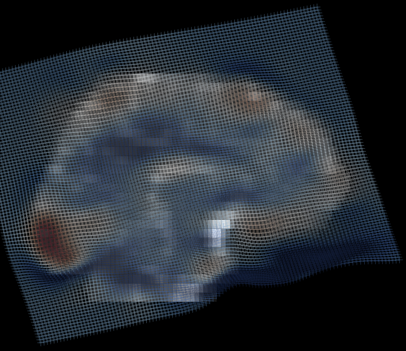

Registration
This page documents TractoR’s facilities for image registration, and the concepts used by them.
Transformations
Registration is the dual operation of estimating a transformation which will bring a source image into alignment with a target image, and resampling the source image into target space. The estimation phase is performed by optimising the parameters of the transformation with respect to a cost function which describes how much “difference” or “disagreement” there is between the resampled source image and the target.
The transformation may either be linear or nonlinear. Linear transformations are typically represented using affine matrices, and they transform all parts of the image in the same way. By contrast, nonlinear transformations are those in which different parts of the image may be distorted differently. This is illustrated below.

Here, a global rotation can be observed from the oblique grid, but additionally, some areas are expanded by the transformation (red) while others are contracted (blue).
In TractoR, images are stored in Analyze/NIfTI/MGH files, while transformations are stored within a special directory with an “.xfmb” suffix. Information about the latter can be obtained using the reg-info script. Transformation directories contain metadata about the source and target files, as well as the actual linear and/or nonlinear transformation information. TractoR’s image registration scripts create, modify and use the contents of these directories as a matter of course.
Linear registration
Linear registration is performed using the reg-linear script. The work of the registration is performed using NiftyReg or FSL-FLIRT, although the latter requires FSL to be installed separately. (NiftyReg support is built into TractoR.) A source and target image are required as arguments, with the name of the final image to be created as a third argument. There are a number of additional options to control the process: see tractor -o reg-linear for details.
For example, to perform standard affine registration using FSL-FLIRT we would use
tractor reg-linear source target result Method:fsl
Using NiftyReg this would become
tractor reg-linear source target result Method:niftyreg
If you want only to estimate the transformation, but not actually resample the image, then the third argument isn’t needed, but a name for the transformation directory is.
tractor reg-linear source target Method:niftyreg EstimateOnly:true TransformName:source2target
This will create the transformation directory “source2target.xfmb”.
Nonlinear registration
Nonlinear registration, using the reg-nonlinear script, follows a similar principle to linear registration, but in this case only NiftyReg can currently be used. It is recommended that linear registration be performed first. A nonlinear transformation can be stored in the same directory as a linear one, and if an existing transformation is specified, then it will be used for initialisation and then updated with the final nonlinear transformation. So the recommended process to estimate a nonlinear transformation would be
tractor reg-linear source target Method:niftyreg EstimateOnly:true TransformName:source2target
tractor reg-nonlinear source target EstimateOnly:true TransformName:source2target
By default the nonlinear transformation estimated is not invertible, so images can only be transformed in one direction. If bidirectional transformation is required then a symmetric transformation can be estimated using
tractor reg-nonlinear source target EstimateOnly:true TransformName:source2target Symmetric:true
Applying an existing transformation
The reg-apply script can be used to apply a stored transformation to a new image. If both affine (linear) and nonlinear transformations are available, then nonlinear will take priority unless the “PreferAffine” option is set to true. The arguments are a new image and the name of the output image.
tractor reg-apply newimage newresult TransformName:source2target
Visualisation
Transformations can be visualised (as shown above) using the reg-viz script. Please run tractor -o reg-viz for details. The reg-check script provides another visualisation, overlaying an outline of the transformed source image on the target image, and can be useful to check the accuracy of a registration.
Implicit registration
A number of operations which can be performed with TractoR, including neighbourhood tractography, require images or points to be transformed between different spaces. Registration must therefore take place to estimate the relevant transformation in these cases.
TractoR estimates these transformations on demand, at the point that the code first requires them, and then stores them within the tractor/transforms subdirectory of the relevant session for future reference. Files stored in that location have a naming convention giving the source and target space names, separated by the digit “2”: for example, the transformation from diffusion to MNI standard space is called “diffusion2mni.xfmb”. The strategy for transforming between each pair of image spaces—specifying, for example, whether linear or nonlinear registration should be used—is determined by the etc/session/transforms/strategy.yaml file in the TractoR installation directory, which can be overridden by a file of the same name in a particular session. Implicit linear registration is currently performed using NiftyReg by default (as of TractoR v3.0.0), but FSL-FLIRT can be used instead by setting the TRACTOR_REG_METHOD environment variable to fsl. The actual source and target images are chosen to be representative of the space in question: for example, the “maskedb0” image for diffusion space, and the “brain” template for MNI standard space.